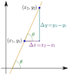

slope
property

Source: Wikipedia
Wikipedia Page (Something wrong with this association? Let us know.)
Wikidata Page (Something wrong with this association? Let us know.)
Occurs in:
- drainage-basin_outlet_channel_bottom__slope
- bedrock_surface__slope
- bedrock_surface__time_derivative_of_slope
- bedrock_surface__x_derivative_of_slope
- bedrock_surface__y_derivative_of_slope
- channel_bottom_surface__slope
- channel_water_channel_bottom_surface__product_of_depth_and_slope
- channel_water_surface__slope
- river-delta_foreset-beds__mean_of_slope
- river-delta_distributary__slope
- river-delta_front__mean_of_slope
- river-delta_plain~lower__mean_of_slope
- river-delta_plain~subaqueous__mean_of_slope
- river-delta_plain~upper__mean_of_slope
- glacier_bed_surface__slope
- glacier_bottom_surface__slope
- glacier_top_surface__slope
- land_surface__slope
- land_surface__x_derivative_of_slope
- land_surface__y_derivative_of_slope
- projectile_trajectory_origin_land_surface__slope
- projectile_trajectory_target_land_surface__slope
- sea_bottom_surface__slope
- sea_surface__slope
- sea_surface_water_wave__slope
- soil_water_phreatic-zone_top_surface__slope